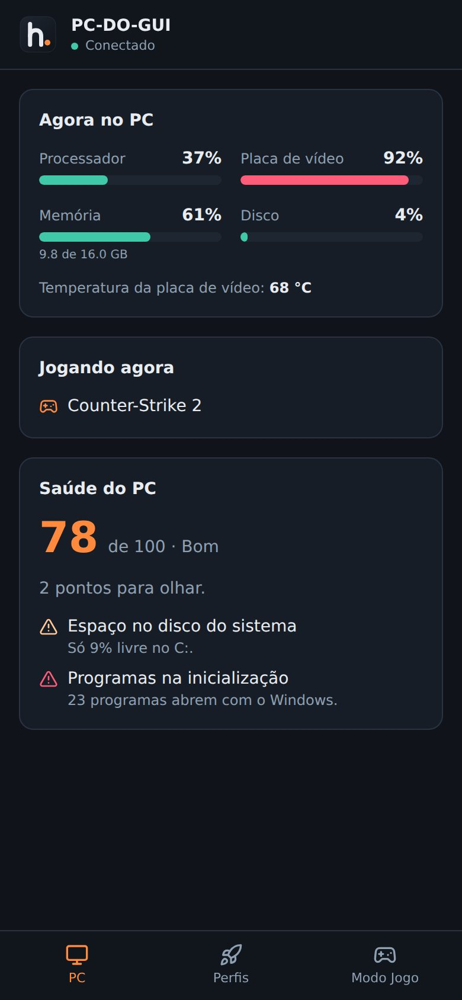

Android e iPhone · pelo navegador
Controle do PC
Escaneie o QR Code da tela Celular no PC, no mesmo Wi-Fi.
- Processador, placa de vídeo, memória e temperatura ao vivo
- Aplicar e desfazer perfis
- Ligar o Modo Jogo e medir o FPS